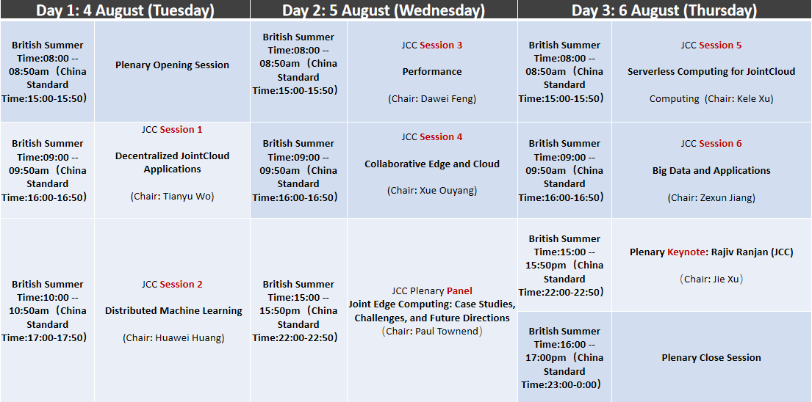

Welcome to the IEEE International Conferences of SOSE/BDS/MC/DAPPS/AITest/JCC 2020. The following table is the IEEE JCC Program Schedule:

1. The conferences' virtual space will officially open tomorrow morning from 8:00am British Summer Time(China Standard Time: 15:00pm). And, a Virtual Reception will also start from 10:00am (BST) tomorrow. The following is the URL of the Virtual Space of the joint conferences: https://moodle.brookes.ac.uk/course/view.php?id=51204
2. The platform for the live sessions of the conference is Zoom. The following are the links for the Zoom rooms for the joint plenary sessions and regular paper presentation sessions of various conferences:
-- JCC Session Room:https://zoom.us/s/91813991754
-- Plenary Sessions Room:https://zoom.us/s/92215142190
-- SOSE Sessions Room:https://zoom.us/s/95585876923
-- BigDataServices Session Room:https://zoom.us/s/94793956575
-- MobileCloud Session Room:https://zoom.us/s/98249182543
-- DAPPS Session Room:https://zoom.us/s/97515405650
-- AITest Session Room:https://zoom.us/s/98779266665
-- Lodge 1 (Reception and social networking):https://zoom.us/j/94357166781?pwd=YUsrSmx6alh4bHdGc3BCYVF6dFk5dz09
-- Lodge 2 (Social networking):https://zoom.us/s/95948278622
3. A Slack channel for emergent communications to conference participants. The link to join the Slack channel is: https://join.slack.com/t/jointieeeconferences/shared_invite/zt-g49wby0i-4XcbYSFPrVWVwAtK4n7iBA
Looking forward to meeting you online at the conferences.